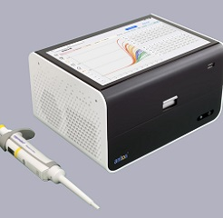
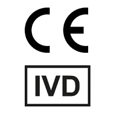
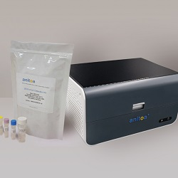
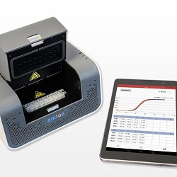
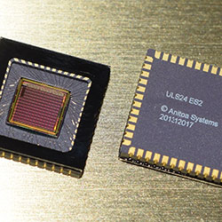
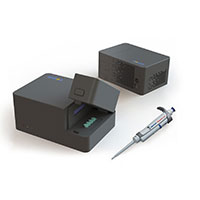
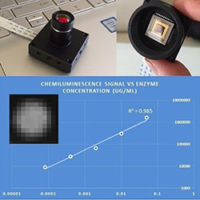
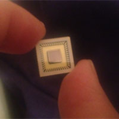

Press Releases

Jan. 7, 2022
PR Newswire
Anitoa Extends its SARS-CoV-2 Rapid Nucleic Acid Test Capability to Include the Detection of Omicron
Read More

Oct. 26, 2021
PR Newswire
Anitoa Receives FDA Registration and Class II Exempt Device Listing for its Maverick Line of Portable qPCR Instruments
Read More

Dec. 15, 2020
PR Newswire
Anitoa Announces CE-IVD Marking of Maverick Portable Real Time PCR (qPCR) Instruments for Fast and Accurate Nucleic Acid Test
Read More

Feb. 25, 2020
PR Newswire
Anitoa introduces rapid, on-site nucleic acid test for 2019 new coronavirus (2019-nCoV)
Read More

Mar. 11, 2019
PR Newswire
Anitoa Introduces Android Apps for Portable Maverick 4-Channel qPCR Systems
Read More


Feb. 13, 2018
PR Newswire
Anitoa Unveils Ultra-portable qPCR System at Molecular Med Tri-con 2018
Read More

May 17, 2016
PR Newswire
Anitoa Demos Portable Chemiluminescence Sensor based on Ultra Low-Light CIS Technology
Read More
